在线学习平台
使用帮助信息
☆普通用户☆
注册：普通用户可以注册网站会员，得到相应用户名和密码。
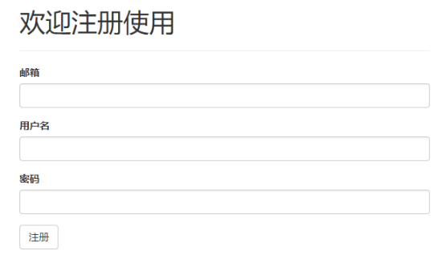
图1、用户注册界面
在线学习：会员登陆后，可以学习所有教学课程（包括查看某课程教学大纲、下载某一章节PDF讲义和在线观看某一章节教学视频等）。
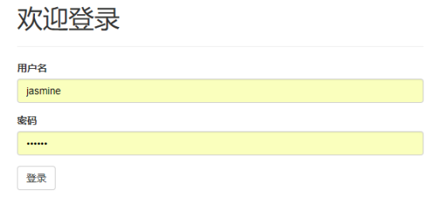
图2、用户登录界面
点击导航栏上的所有课程以后，即可查看所有的课程
图3、查看所有课程
用户点击某一项课程之后，即可查看该课程具体的章节信息
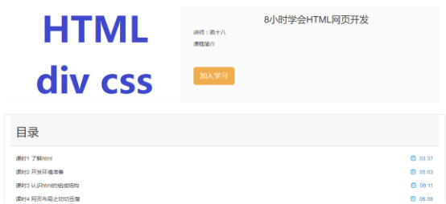
图4、查看课程具体的信息
点击视频的观看按钮，即可查看视频或PDF文件，可进行下载

图5、观看课程视频
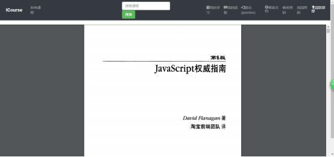
图6、查看PDF文档
学习评论：会员可以在学习某个课程的某一章节后，对该章节进行以相互交流为目的的积极评论，供其他会员学习查看。
在观看章节视频的页面右侧，即可发表评论
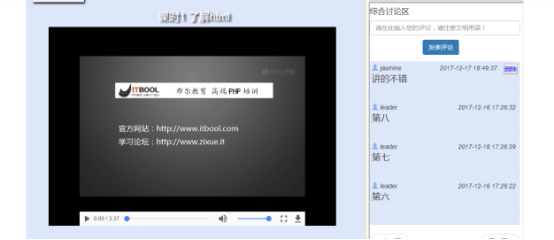
图7、用户发表评论或进行讨论
用户在登陆系统之后，可通过点击导航栏上的“我的学习”的链接来查看个人的学习记录
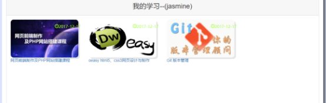
图8、用户查看“我的学习”
用户在登陆系统之后，可通过点击导航栏上的“我的消息”的链接来查看个人的学习记录
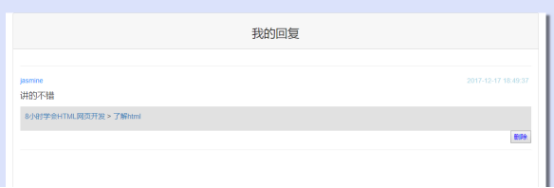
图9、用户查看“我的消息”
查看帮助信息：系统使用帮助功能，会员登录后，点击导航栏上的“帮助信息”的链接，就可以查看系统使用帮助信息。
☆课程管理员☆
课程信息管理：课程管理员具有普通用户所拥有的所有功能
，另外地，课程管理员可以新增、修改或删除课程信息，以及将课程分类。
课程管理员在登陆系统后，点击导航栏上的“添加课程”的链接，即可进行新增课程的操作
图10、课程管理员新增课程
课程管理员在登陆系统后，点击导航栏上的“修改课程信息”的链接，即可进行修改课程信息的操作
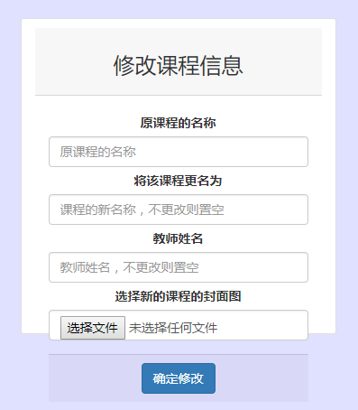
图11、课程管理员修改课程信息
课程管理员在登陆系统后，点击导航栏上的“管理课程”的链接，即可进行删除课程的操作
图12、课程管理员删除课程
课程资料管理：课程资料包括视频资源和PDF讲义资源，课程资料管理员可以针对某个课程的某一章节新增、修改或删除相关课程资料。
点击进入某一具体的课程后，课程管理员可对章节信息进行添加章节、删除章节以及修改章节信息的操作
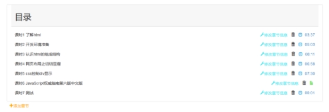
图13、课程管理员管理课程章节信息
查看帮助信息：系统使用帮助功能，会员登录后可以查看系统使用帮助信息。
☆系统管理员☆
系统管理功能：课程管理员具有普通用户所拥有的所有功能
，另外地，课程管理员还具有功能：管理课程类型、关键字管理、管理用户权限、评论审核（会员评论需要管理员审核通过后才能显示）。
查看帮助信息：系统使用帮助功能，会员登录后可以查看系统使用帮助信息。
系统管理员在登陆系统后，点击导航栏上的“管理课程类型”的链接，即可进行管理课程类型的操作
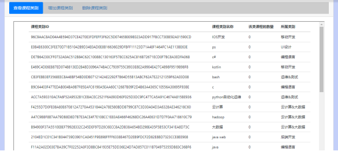
图14、 系统管理员管理课程类型
系统管理员在登陆系统后，点击导航栏上的“敏感词管理”的链接，即可进行敏感词管理的操作
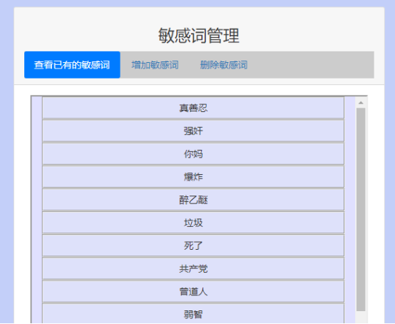
图15、 系统管理员进行关键字管理
系统管理员在登陆系统后，点击导航栏上的“审核用户评论”的链接，即可进行审核用户评论的操作
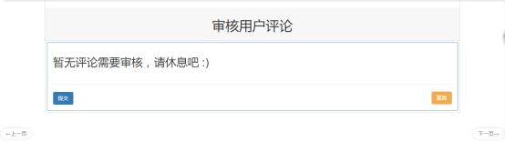
图16、 系统管理员进行关评论审核
系统管理员在登陆系统后，点击导航栏上的“管理用户权限”的链接，即可进行管理用户权限的操作
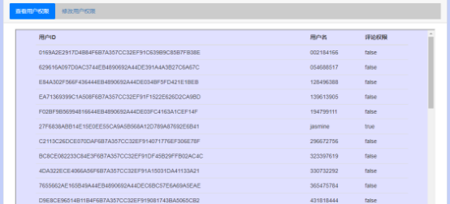
图17、 系统管理员进行关评论审核
☆公司领导☆
统计功能：公司领导具有普通用户所具有的所有的功能，另外地，公司领导还能进行的操作有：课程信息按类型统计、课程教学视频按查看次数统计。
公司领导在登陆系统后，点击导航栏上的“按类别统计”的链接，即可进行课程信息按类型统计的操作
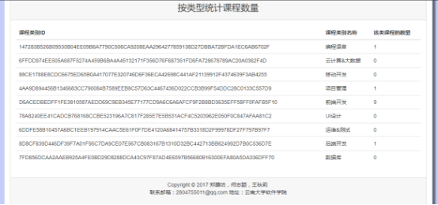
图18、 公司领导查看按类型统计的课程信息
公司领导在登陆系统后，点击导航栏上的“按浏览量统计”的链接，即可进行课程信息按浏览量统计的操作
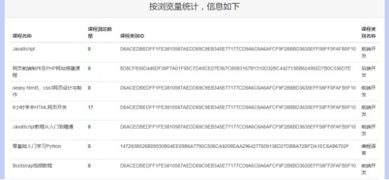
图19、 公司领导查看按浏览量统计的课程信息
查看帮助信息：系统使用帮助功能，会员登录后可以查看系统使用帮助信息。
其他说明：该平台是基于浏览器端的。在使用过程中，如遇到任何问题，都可通过邮箱：2804755011@qq.com，与我们取得联系。
制作方：何志颖、郑膜坊、王秋莉
2017年12月15日星期五